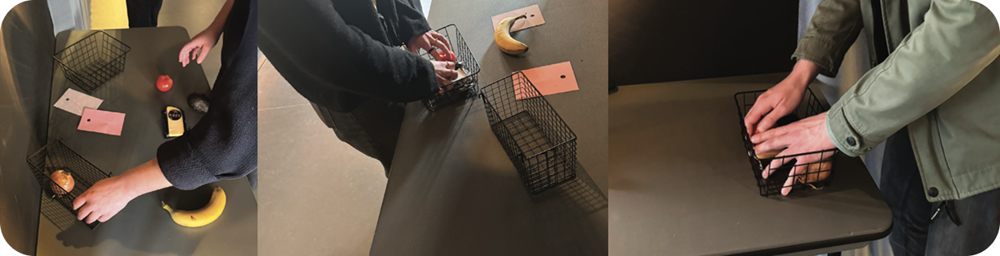
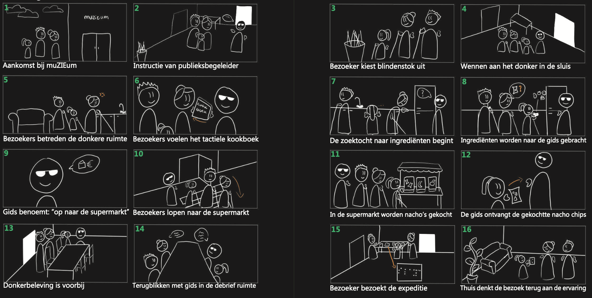
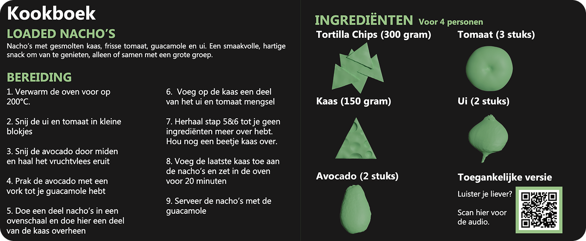

Back to projects
Back to projects
muZIEum - interaction design / museum design

“How can storytelling transform a sensory museum experience into a cohesive narrative that visitors actively become part of?”
For this project, we redesigned part of the Daily Life experience at muZIEum. The existing experience already makes a strong impression by allowing visitors to navigate everyday environments without sight, guided by a blind or visually impaired guide. However, our research showed that the different spaces lacked a clear narrative connection and that visitors often had a relatively passive role.
Our concept shifts the experience from passive navigation to active participation. In the redesigned kitchen, visitors are challenged to find a cookbook and figure out which ingredients they need to make nachos. Since the experience takes place in complete darkness, the cookbook uses different textures to make the ingredients recognizable through touch. Visitors then search the kitchen to check whether everything they need is there, only to discover that one ingredient is missing. This creates a problem they have to solve themselves, naturally leading them from the kitchen to a newly introduced supermarket environment.
A €1 coin becomes a recurring narrative anchor throughout the experience. Instead of simply being guided from one room to another, visitors move forward because their actions give them a reason to do so. By combining narrative design, sensory interaction and problem-solving, the experience becomes more connected, memorable and engaging.
We developed and tested the concept with both actual muZIEum visitors and fellow students. These tests helped us refine the instructions, spatial layout and level of guidance, ultimately creating an experience that encourages visitors to explore, communicate and work together.
Storyboard

Cookbook
